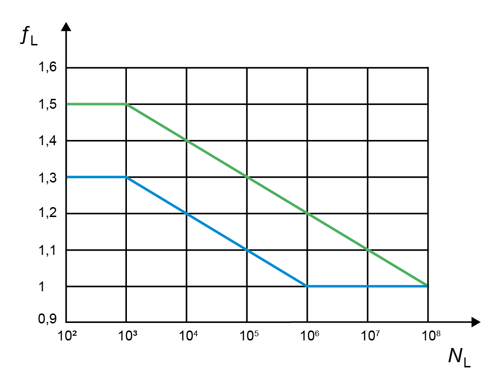

|
|
|


载荷峰值次数
fL 是载荷峰值系数，取决于材料类型和 。该系数显示在 DIN 6892 的图表中，是执行 Niemann 计算所需的输入值。
对于使用 峰值扭矩 的计算：
pmax=fL * pzul

图 38.4：如 Niemann（DIN 6892 图 8）所述：载荷峰值系数
- 绿线：韧性材料
- 蓝线：脆性材料
English Original
Number of load peaks
fL is the Load peak coefficient, which depends on the material type and the . This coefficient is shown in a diagram in DIN 6892 and is required as an input value for performing the calculation according to Niemann.
For calculation with peak torque:
pmax=fL * pzul
Figure 38.4: Graphic as described in Niemann (DIN 6892 Figure 8): Load peak coefficient
- Green line: ductile material
- Blue line: brittle material